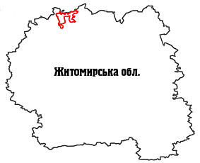

Поліський природний заповідник.

Розташування: Житомирська область, Овруцький та Олевський райони
Площа: 20104,0 га
Підпорядкування: Державний комітет лісового господарства України

Поліський природний заповідник було створено постановою Ради Міністрів УРСР від 12 листопада 1968 року № 568.Площа заповідника становить 20104,0 га, площа його охоронної зони - 14146,0 га.
Заповідник розташований у північно-західній частині Центрального, або Житомирського, Полісся України. Це типовий і, разом з тим, унікальний куточок мальовничої поліської природи у межиріччі р. Уборті та її притоки - р. Болотниці. Територія заповідника знаходиться на межі Українського кристалічного щита та Прип'ятьської низовини. Основу геологічної будови становлять докембрійські породи (граніти, гнейси, лабрадорити, кварцити, габро). Ґрунтоутворювальними породами є насамперед четвертинні відклади кайнозою, представлені водно-льодовиковими та алювіальними пісковиками дніпровського зледеніння, а також сучасний алювій і органогенні утворення - торфовища.
Рельєф заповідника - це поєднання високих піщаних гряд, дюн і валів, що утворилися в льодовиковий період, та понижень між ними, які зайняті сфагновими болотами. Переважають дерново-середньопідзолисті піскові та глинисто-піскові ґрунти різного ступеню оглеєння, а в пониженнях - торф.
Клімат у районі розміщення заповідника помірно вологий, континентальний, з теплим, помірно вологим літом і м'якою хмарною зимою. Середня літня температура повітря становить +17 °С з абсолютним максимумом +33 °С, середня зимова - -7 °С з абсолютним мінімумом
-36°С. Річна сума опадів коливається від 510 до 1070 мм.
Рівень ґрунтових вод на пониженнях становить лише 0,2-0,5 м, а на підвищеннях - до 15 м. Тут зустрічається значна кількість джерел. Здебільшого води їх поглинаються болотами, інколи вони живлять струмки, які впадають у річки заповідника або губляться в болотах. З часів осушувально-меліоративної кампанії тут збереглися неглибокі канави, якими вода збігає з боліт. В окремих місцях на територію заповідника заходять глибокі канави (загальна їх протяжність становить 7 км) меліоративних систем.
Такі фізико-географічні умови стали визначальними для формування на цій території своєрідного бореального рослинного комплексу з переважанням соснових лісів і сфагнових боліт.
У минулому ця місцевість була ще більше заболоченою із суцільним бездоріжжям і непрохідними хащами з грузькими болотами. З часом її природні екосистеми зазнавали антропогенного впливу. У роки війни значні площі лісів були вирубані і спалені, а в 60-ті роки землі заповідника зачепила осушувальна меліорація, що, звичайно, не могло не вплинути на його природні комплекси.
У заповіднику представлені як типові для Полісся рослинні угруповання, так і унікальні, які більше не зустрічаються ніде в Україні. До останніх належать, зокрема, бореальні (північні) угруповання - лісові та болотні.
З давніх-давен на цій території переважали соснові ліси, які нині займають 77,1 % площі вкритих лісом земель заповідника. Частка березових лісів становить 16,8 %, а вільхових та інших - 6,1 % лісовкритих площ.
Розподіл рослинних угруповань у заповіднику визначається глибиною залягання ґрунтових вод, тобто розміщенням ценозу на певному елементі рельєфу: на піщаній дюні, її схилі, у міждюнній улоговині тощо. Привершинні ділянки піщаних дюн зайняті лишайниковими борами (біломошниками), рідкісними для України. Сосни тут низькі, у віці 50-70 років мають висоту не більше 10 м. Ґрунтозахисне значення цих угруповань значне, хоч ці ценози і вважаються найбіднішими на Поліссі.
На більш понижених ділянках рельєфу сформувалися соснові ліси з чорницею, брусницею, вересом та зеленим мохом. У міждюнних улоговинах ростуть сосняки довгомошні та сфагнові. В заплавах річок зосереджені березові та березово-вільхові ліси, подекуди з домішкою осики. У південно-східній частині заповідника є ділянки осикових, дубових і дубово-соснових лісів.
Переважають у заповіднику типові поліські болота, більшість яких належить до мезотрофних. Загалом площа боліт і заболочених лісів становить близько 5 тис. га. Це насамперед рідколісні осоково-сфагнові болотні комплекси. Унікальними є опуклі оліготрофні болота, де домінують бурі й червоні сфагнові мохи. На болотному масиві Спуди ростуть льодовикові реліктові та арктобореальні види, зокрема шейхцерія болотна та журавлина дрібноплода.
До Зеленої книги України занесено 10 рослинних угруповань: 4 лісових, 2 болотних та 4 водних. З лісових угруповань охороняються соснові ліси чорничні та зеленомохові - типові для Українського Полісся, соснові ліси плаунові, а також соснові ліси ялівцеві - рідкісні лісові угруповання, які на території країни знаходяться на крайній межі свого поширення. Серед болотних рослинних угруповань збереглися сосново-сфагнові опуклі верхові болота з журавлиною дрібноплодою та рідкісні реліктові шейхцерієво-сфагнові. Значного поширення в заповіднику набули водні угруповання з участю водяного горіха плаваючого, лілії білої, глечиків жовтих та їжачої голівки малої.
Флора судинних рослин нараховує 604 види, мохоподібних - 139, водоростей - 376, лишайників - 140, грибів - 42 види. Надзвичайне значення має Поліський природний заповідник для збереження фітогенофонду рідкісних видів рослин, занесених до Червоної книги України. Тут росте 20 таких видів вищих рослин, а два види (козельці українські та сілка литовська) занесені до Європейського червоного списку.
Серед рідкісних видів найчисленнішими є представники родини орхідних - гудайєра повзуча, пальчатокорінники Фукса, Траунштейнера і травневий, любка дволиста; родини плаунових: діфазіаструм сплюснутий, плаун колючий, лікоподієла заплавна. Значну наукову цінність становлять реліктові види: верби лапландська і чорнична, шейхцерія болотна, осока багнова, шолудивник королівський. У заповіднику охороняються також водяний горіх плаваючий, росичка проміжна, ситник бульбистий, журавлина дрібноплода. У флорі заповідника відмічено багато цінних лікарських рослин: цмин пісковий, звіробій, брусниця, чорниця і такий тайговий вид, як мучниця, або ведмеже вухо.
Тваринний світ заповідника налічує 39 видів ссавців, 180 - птахів, 7 - плазунів, 11 - земноводних, 19 - риб, 537 - комах.
Звичними тут є зустрічі з ссавцями (лось, косуля, олень благородний, кабан дикий, лисиця, куниця лісова, бобер річковий, білка звичайна, заєць-русак, тхір лісовий, ласка та їжак звичайний); птахами (лелека білий, куріпка сіра, крижень, чирок-тріскунок, тетерев, шуліка чорний); плазунами (вуж звичайний, гадюка звичайна, черепаха болотяна, ящірка прудка); земноводними (тритон гребінчастий, часничниця, жаби озерна, ставкова і трав'яна). Із риб звичайними є щука, сом, лин, в'юн, в'язь, минь і ін.
У заповіднику мешкають багато рідкісних видів тварин. До Червоної книги України занесено 14 видів: з птахів - лелеку чорного, журавля сірого, сову бородату, сича волохатого, сичика-горобця, глухаря, підорлика малого, змієїда; із ссавців - борсука, горностая, рись європейську, видру річкову, зайця-біляка; із круглоротих - міногу українську. Тут відбувається гніздування лелеки чорного і глухаря, що свідчить про наявність куточків справді "дикої" природи.
Охороняються у заповіднику і 6 видів тварин, занесених до Європейського червоного списку. Зокрема, це вовчок ліщиновий, вовк, видра, рись, деркач, мінога українська та мурашка руда лісова.
Усі занесені до Червоної книги України види птахів та видра річкова входять і до групи видів тварин, що підлягають особливій охороні за Конвенцією про охорону дикої флори і фауни та природних середовищ існування в Європі (м. Берн, 1979 рік). Загалом тут охороняються 118 таких видів, хоча більшість з них є у нас звичними.
Висновок
Таким чином, Українське Полісся багате на заповідні території та об’єкти. У даній роботі були розглянуті найважливіші заповідні території.
Рівненський природний заповідник було створено Указом Президента України від 3 квітня 1999 року № 356 на площі 47046,8 га, проте згідно з постановою Кабінету Міністрів України від 14 серпня 2003 року № 1271 заповіднику було передано у постійне користування земельну ділянку площею 42288,7 га.
Територія заповідника складається з чотирьох окремих ділянок, які з 1984 року мали статус заказників загальнодержавного значення: ландшафтний заказник "Білоозерський" (Володимирецький р-н), загальнозоологічний - "Перебродівський" (Дубровицький та Рокитнівський р-ни), ботанічний - "Сира Погоня" (Рокитнівський р-н), гідрологічний - "Сомино" (Сарненський р-н). Це найбільші за площею і найкраще збережені болотні масиви України, взяті під охорону. Значну роль у їх вивченні та розробці рекомендацій щодо охорони відіграли українські болотознавці на чолі з професором Є.М.Брадісом та вчені-орнітологи.
Заповідник створено з метою збереження у природному стані типових та унікальних природних комплексів Українського Полісся.
Характерною ознакою Рівненського заповідника є те, що в ньому представлені болота всіх типів, які є на Українському Поліссі. Найбільшою різноманітністю боліт визначається Білоозерська ділянка. Саме на ній добре представлені болота з багатим живленням - низинні (евтрофні). На решті ділянок переважають сфагнові болота: ті, що досягли високого ступеня розвитку - верхові (оліготрофні) та менш розвинені - перехідні (мезотрофні).
Шацький національний природний парк було створено постановою Ради Міністрів УРСР від 28 грудня 1983 року № 533, на площі 32515,0 га. Згідно з розпорядженням Ради Міністрів УРСР від 31 березня 1986 р. № 159-р в постійне користування парку було надано 6761,8 га, а відповідно до Указу Президента України від 16 серпня 1999 року № 992 площу парку було розширено і на сьогодні вона становить 48977,0 га, з них 20856,0 га земель знаходиться у його постійному користуванні.
Парк було створено на базі державних ландшафтних заказників "Озеро Кримне", "Озеро Пісочне", "Озеро Пулемецьке", "Озеро Світязь", які були оголошені у 1974 році, зоологічної пам'ятки природи "Озеро Климівське", гідрологічних пам'яток природи "Болото Луки", "Болото Мелеване", "Болото Піддовге-Підкругле", що були оголошені у 1975 році.
На сьогодні до території парку входять ботанічний заказник загальнодержавного значення "Втенський" (130,0 га), лісові заказники місцевого значення "Ростанський" (14,6 га) та "Ялинник" (83,0 га), іхтіологічний заказник "Сомиець" (46,0 га) та 4 ботанічні пам'ятки природи місцевого значення.
Поєднання численних озер з лісовими масивами, своєрідний поліський колорит, різноманіття рослинних угруповань та висока їх естетична цінність, добре розвинена транспортна мережа сприяли розвитку рекреації в цьому мальовничому куточку Західного Полісся. На даний час у парку функціонують чотири зони відпочинку: "Гряда", "Світязь", Урочище Гушове" та "Пісочне". На берегах озер розміщено велику кількість баз відпочинку, пансіонат "Шацькі озера" (600 місць), санаторій "Лісова пісня" (420 місць), спортивні та дитячі табори та низка малих наметових містечок. В останні роки у парку проводиться Міжнародний пісенний фестиваль "На хвилях Світязя".
Поліський природний заповідник було створено постановою Ради Міністрів УРСР від 12 листопада 1968 року № 568.
Площа заповідника становить 20104,0 га, площа його охоронної зони - 14146,0 га.
Заповідник розташований у північно-західній частині Центрального, або Житомирського, Полісся України. Це типовий і, разом з тим, унікальний куточок мальовничої поліської природи у межиріччі р. Уборті та її притоки - р. Болотниці. Територія заповідника знаходиться на межі Українського кристалічного щита та Прип'ятьської низовини. Основу геологічної будови становлять докембрійські породи (граніти, гнейси, лабрадорити, кварцити, габро). Ґрунтоутворювальними породами є насамперед четвертинні відклади кайнозою, представлені водно-льодовиковими та алювіальними пісковиками дніпровського зледеніння, а також сучасний алювій і органогенні утворення - торфовища.